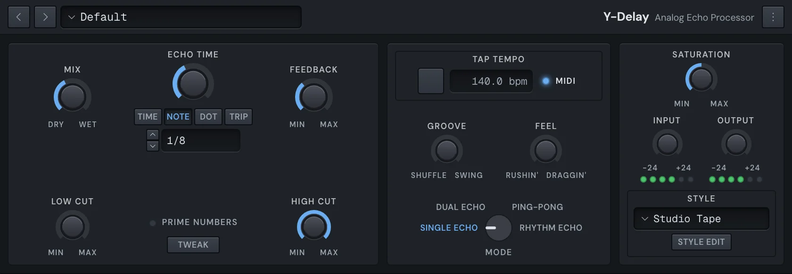

Mix
Y-Delay
Y-Delay is an echo. It can be one clean repeat, two that answer each other, a ping-pong across the stereo field, or a rhythm of taps you draw on a grid. Its Echo Style gives the repeats the sound of a machine, from studio tape and oil cans to radios and choruses. It keeps to the song's tempo unless you tap one of its own.

Get started
- Put Y-Delay in a mixer slot (see Built-in effects).
- Pick a preset from the menu in the top bar, or click a Mode name on the dial.
- Set the echo time: click Note and turn the knob for a note value, such as an eighth or a dotted eighth.
- Set Feedback for how many times it repeats, and Mix for how loud the echoes are against the dry sound.
Modes
The Mode dial in the middle picks how the echoes are laid out. Click a name to choose it, or the dial for the next.
- Single Echo: one echo time.
- Dual Echo: two echoes with their own times, Echo 1 and Echo 2.
- Ping-Pong: two echoes that bounce between left and right, Ping and Pong.
- Rhythm Echo: taps you place on a grid.
The section at the left changes with the mode.
Echo times
Each echo time has a knob, four keys and a display:
- Time: in milliseconds. Turning it while the song plays bends the pitch, as tape does.
- Note: a note value, in time with the song.
- Dot and Trip: dotted or triplet note values.
Drag the display up or down, nudge it with the arrow keys, or click it and type a value: 126.2 for milliseconds, or 1/8 dot for a note.
The echo section
In Single Echo, Dual Echo and Ping-Pong:
- Mix: from Dry to Wet. At the middle it's half and half.
- Echo Time, or Echo 1 and Echo 2, or Ping and Pong.
- Feedback: how much of each echo goes round again. Turn it up for more repeats; with some styles, all the way for an echo that runs away.
- Low Cut and High Cut: filter the echoes, not the dry sound.
- Prime Numbers: nudges the times to prime numbers of milliseconds, so the echoes never ring together.
- Tweak: opens the mode's finer controls (see Tweak).
Rhythm Echo
In Rhythm Echo, the echoes are taps on a grid you draw.
- Mix and Feedback, as in the other modes.
- Rhythm: the time between the taps, with the same Time, Note, Dot and Trip keys. Turning it lays the taps out evenly again.
- Patt: the patterns menu, in groups (Bars, Notes, Dotted, Triplet and Presets). The pattern's name shows beside it.
- Shape: how the taps fade along the pattern. The menu picks Decay, Reverse, Swell, Fade or NonLin; the knob sets how much.
- Repeats: how many taps follow the One, evenly spaced.
The rhythm grid
The grid sits between Low Cut and High Cut.
| Gesture | What it does |
|---|---|
| Click | Adds a tap on the nearest grid line. |
| Drag a tap sideways | Moves it along the grid. Hold ⌘ or ⇧ to move it off the grid. |
| Drag a tap up or down | Sets its level. |
| ⌥-click or right-click a tap | Deletes it. |
| Click the left edge | Puts the first tap (the One) back. |
The One is yellow. Taps past what the delay can hold turn grey and stay silent.
Tempo, groove and feel
- MIDI: keeps Y-Delay to the song's tempo. It's on to start with.
- Tap Tempo: tap it in time to give Y-Delay a tempo of its own. MIDI goes off.
- The tempo display: drag it or type a tempo in bpm.
- Groove: from Shuffle to Swing, for echoes that lean.
- Feel: from Rushin' to Draggin': pushes the echoes up to 30 ms early or late.
Saturation and levels
- Saturation: how hard the echoes are driven, from Min to Max. What it does depends on the style.
- Input and Output: the levels in and out. Each has an LED meter: green for the level, yellow 6 dB below clipping, red when it clips.
- Echo Style: the sound of the machine the echoes come from (see Styles).
- Style Edit: the style's own settings (see Style Edit).
Tweak
Click Tweak for the mode's finer controls.
| Mode | Controls |
|---|---|
| Single Echo | Width, L/R Offset (up to 25 ms between the sides, for width), Accent (makes the even or the odd repeats softer). |
| Dual Echo, Ping-Pong | Balance (between the two echoes), FB Mix (from each echo feeding itself to each feeding the other), FB Bal, Accent 1 and Accent 2. |
| Rhythm Echo | L/R Offset, Width, Pan Shape (Double, Center, Alt 1, Alt 2, Alt 3, Sweep L, Sweep R or Pan), Accent (softer even or odd taps), Rhythm Grid (the grid's step) and Length (beats). |
Styles
Click Echo Style for the menu. Each style has a line on how it sounds. They range over:
- Tape: Master Tape, Studio Tape, Tape Loop, Roller Echo, Tube Tape, Cheap Tape.
- Pedals and old machines: Bucket Brigade, Small BBD, Oil Can, Drum Echo.
- Radio and phone: Telephone, AM Radio, FM Radio, Shortwave, Transmitter.
- Clean and chorus: Digital Delay, Analog Delay, DigitalChorus, Analog Chorus, Vintage Chorus, Vibrato.
- Driven: Saturated, Fat, Distressed, Limited, Distorted, Queeked.
- Spaces: Ambient, Diffused, Splattered, Verbed.
Style Edit
Click Style Edit to change the style itself. Its panel has:
- Low EQ, Mid EQ and High EQ: each with Freq and Gain (the Mid with Res too), and Decay: how much the EQ builds up with each repeat.
- Diffusion: Amount and Size, and whether it's in the feedback Loop (each repeat more diffused) or Post (every repeat diffused alike).
- Wobble: Depth, Rate (or Sync to the song), FB (wobble the repeats) and Out (wobble the echo's output), with a shape: Triangle, Sine, Square, Random Walk or Random S/H.
- Saturation: Decay Sat (on the repeats) and Out Sat (on the output), with a type: Clean, Tape, Warm, Pump, Dirt, Hard Limit, Soft Limit, Warm Limit or Bright Limit.
Once you change it, the style reads Custom, from the style you started from.
Knobs
Drag a knob up or down, or scroll over it. Hold ⌘ for fine moves. ⌥-click or middle-click resets it. Right-click for Reset, Copy value, Paste value, Type in value… and its automation.
Presets
The presets are in folders: Basic, Bass, Chorus, Classic, Drums, Effected, Guitar, MultiTap, Rhythmic, Spacy, Verbs, Vocal and WayOut. They go from Quarter Note Tape and Slapback to dub throws and choruses. Once you change a setting, the preset's name reads Custom.
Y-Delay has no A/B or Undo button; ⌘Z undoes its changes like any other edit. The ⋮ menu holds Copy state and Paste state, to copy one Y-Delay's settings into another.
Automation
Mix, Feedback, the echo times, Rhythm, Shape, Low Cut, High Cut, Saturation, Input, Output, Groove, Feel, the Tweak knobs and the Style Edit knobs can be automated. Right-click a knob, or touch it and click Automate "…" in the title bar. See Automation.
Something here wrong or missing? Tell us.